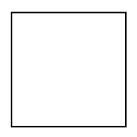
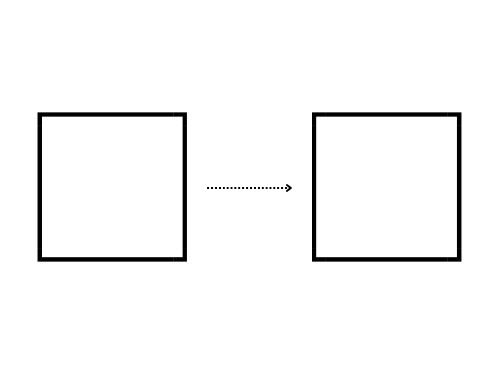

Explaining the Fact0rn, how to works ands its uses
Fact0rn. put simply, is a blockchain that actually has a real world use case. Not tryign to hurt anyones feelings and gambling convictions, but the FACT is that most blockchains are just a bunch of code that fix problems that no has or cares. So why is Fact0rn so special? And do I think that Bitcoin is useless? (Yes I do Kaspa is a better P2P money )
